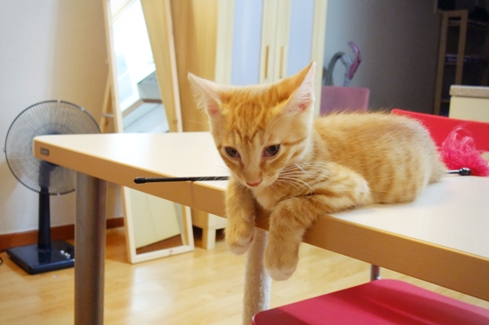

망고 2차 예방접종을 하고 왔다. 나름 외출한다고 간밤에 목욕도 시키고 발톱도 깎아주었더니, 의사 선생님이 오늘 온 아이 중에 제일 깨끗하다고 칭찬해주셨다. 선생님 친구로 짐작되는 분은 털 색깔이 무척 예쁜 미남이라며 망고 볼을 부비부비. 잘난 아들을 둔 탓에 전 국민적 질시를 한 몸에 받는 엄마친구의 마음이 이런 것일까. 내가 낳은 것도 아닌데, 으쓱거리는 어깨짓을 멈출 수 없다. 아참, 체중은 1.42kg. 1주에 160g의 속도로, 망고는 자라는 중이다.